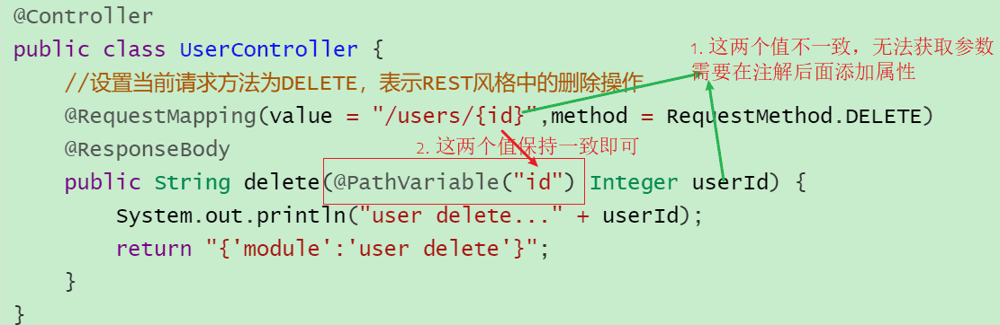
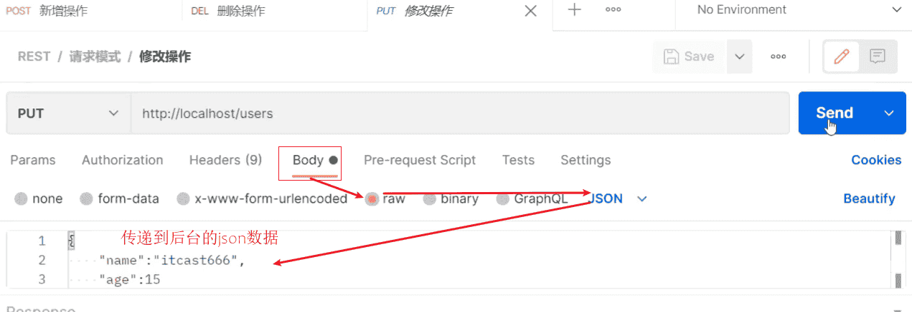
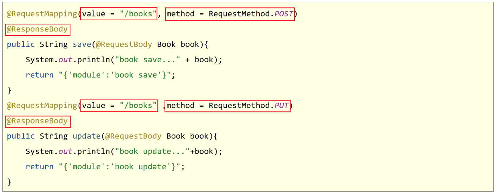

SpringMVC之Rest风格
1. Rest风格
对于Rest风格，需要学习的内容包括:
- REST简介
- REST入门案例
- REST快速开发
1.1 REST简介
-
REST（Representational State Transfer），表现形式状态转换,它是一种软件架构风格
当想表示一个网络资源的时候，可以使用两种方式:
- 传统风格资源描述形式
http://localhost/user/getById?id=1查询id为1的用户信息http://localhost/user/saveUser保存用户信息
- REST风格描述形式
http://localhost/user/1http://localhost/user
- 传统风格资源描述形式
传统方式一般是一个请求url对应一种操作，这样做不仅麻烦，也不安全，因为会程序的人读取了你的请求url地址，就大概知道该url实现的是一个什么样的操作。
查看REST风格的描述，你会发现请求地址变的简单了，并且光看请求URL并不是很能猜出来该URL的具体功能
所以REST的优点有:
- 隐藏资源的访问行为，无法通过地址得知对资源是何种操作
- 书写简化
但是的问题也随之而来了，一个相同的url地址即可以是新增也可以是修改或者查询，那么到底该如何区分该请求到底是什么操作呢?
- 按照REST风格访问资源时使用行为动作区分对资源进行了何种操作
http://localhost/users查询全部用户信息 GET（查询）http://localhost/users/1查询指定用户信息 GET（查询）http://localhost/users添加用户信息 POST（新增/保存）http://localhost/users修改用户信息 PUT（修改/更新）http://localhost/users/1删除用户信息 DELETE（删除）
请求的方式比较多，但是比较常用的就4种，分别是GET,POST,PUT,DELETE。
按照不同的请求方式代表不同的操作类型。
- 发送GET请求是用来做查询
- 发送POST请求是用来做新增
- 发送PUT请求是用来做修改
- 发送DELETE请求是用来做删除
但是注意:
- 上述行为是约定方式，约定不是规范，可以打破，所以称REST风格，而不是REST规范
- REST提供了对应的架构方式，按照这种架构设计项目可以降低开发的复杂性，提高系统的可伸缩性
- REST中规定GET/POST/PUT/DELETE针对的是查询/新增/修改/删除，但是如果非要用GET请求做删除，这点在程序上运行是可以实现的
- 但是如果绝大多数人都遵循这种风格，你写的代码让别人读起来就有点莫名其妙了。
- 描述模块的名称通常使用复数，也就是加s的格式描述，表示此类资源，而非单个资源，例如:users、books、accounts…
清楚了什么是REST风格后，后期会经常提到一个概念叫RESTful，那什么又是RESTful呢?
- 根据REST风格对资源进行访问称为RESTful。
后期在进行开发的过程中，大多是都是遵从REST风格来访问的后台服务，所以可以说咱们以后都是基于RESTful来进行开发的。
1.2 RESTful入门案例
1.2.1 环境准备
-
创建一个Web的Maven项目
-
pom.xml添加Spring依赖
1
2
3
4
5
6
7
8
9
10
11
12
13
14
15
16
17
18
19
20
21
22
23
24
25
26
27
28
29
30
31
32
33
34
35
36
37
38
39
40
41
42
43
44
45
<project xmlns="http://maven.apache.org/POM/4.0.0" xmlns:xsi="http://www.w3.org/2001/XMLSchema-instance"
xsi:schemaLocation="http://maven.apache.org/POM/4.0.0 http://maven.apache.org/xsd/maven-4.0.0.xsd">
<modelVersion>4.0.0</modelVersion>
<groupId>com.itheima</groupId>
<artifactId>springmvc_06_rest</artifactId>
<version>1.0-SNAPSHOT</version>
<packaging>war</packaging>
<dependencies>
<dependency>
<groupId>javax.servlet</groupId>
<artifactId>javax.servlet-api</artifactId>
<version>3.1.0</version>
<scope>provided</scope>
</dependency>
<dependency>
<groupId>org.springframework</groupId>
<artifactId>spring-webmvc</artifactId>
<version>5.2.10.RELEASE</version>
</dependency>
<dependency>
<groupId>com.fasterxml.jackson.core</groupId>
<artifactId>jackson-databind</artifactId>
<version>2.9.0</version>
</dependency>
</dependencies>
<build>
<plugins>
<plugin>
<groupId>org.apache.tomcat.maven</groupId>
<artifactId>tomcat7-maven-plugin</artifactId>
<version>2.1</version>
<configuration>
<port>80</port>
<path>/</path>
</configuration>
</plugin>
</plugins>
</build>
</project> -
创建对应的配置类
1
2
3
4
5
6
7
8
9
10
11
12
13
14
15
16
17
18
19
20
21
22
23
24
25
26
27
28
29
30public class ServletContainersInitConfig extends AbstractAnnotationConfigDispatcherServletInitializer {
protected Class<?>[] getRootConfigClasses() {
return new Class[0];
}
protected Class<?>[] getServletConfigClasses() {
return new Class[]{SpringMvcConfig.class};
}
protected String[] getServletMappings() {
return new String[]{"/"};
}
//乱码处理
protected Filter[] getServletFilters() {
CharacterEncodingFilter filter = new CharacterEncodingFilter();
filter.setEncoding("UTF-8");
return new Filter[]{filter};
}
}
//开启json数据类型自动转换
public class SpringMvcConfig {
} -
编写模型类User和Book
1
2
3
4
5
6
7
8
9
10
11public class User {
private String name;
private int age;
//getter...setter...toString省略
}
public class Book {
private String name;
private double price;
//getter...setter...toString省略
} -
编写UserController和BookController
1
2
3
4
5
6
7
8
9
10
11
12
13
14
15
16
17
18
19
20
21
22
23
24
25
26
27
28
29
30
31
32
33
34
35
36
37
38
39
40
41
42
43
44
45
46
47
48
49
50
51
52
53
54
55
56
57
58
59
60
61
62
63
64
65
66
67
68
69
70
71
72
73
74
75
76
77
78
public class UserController {
public String save( User user) {
System.out.println("user save..."+user);
return "{'module':'user save'}";
}
public String delete(Integer id) {
System.out.println("user delete..." + id);
return "{'module':'user delete'}";
}
public String update( User user) {
System.out.println("user update..." + user);
return "{'module':'user update'}";
}
public String getById(Integer id) {
System.out.println("user getById..." + id);
return "{'module':'user getById'}";
}
public String getAll() {
System.out.println("user getAll...");
return "{'module':'user getAll'}";
}
}
public class BookController {
public String save( Book book){
System.out.println("book save..." + book);
return "{'module':'book save'}";
}
public String delete( Integer id){
System.out.println("book delete..." + id);
return "{'module':'book delete'}";
}
public String update( Book book){
System.out.println("book update..." + book);
return "{'module':'book update'}";
}
public String getById( Integer id){
System.out.println("book getById..." + id);
return "{'module':'book getById'}";
}
public String getAll(){
System.out.println("book getAll...");
return "{'module':'book getAll'}";
}
}
最终创建好的项目结构如下:
1 | springmvc_06_rest |
1.2.2 思路分析
需求:将之前的增删改查替换成RESTful的开发方式。
1.之前不同的请求有不同的路径,现在要将其修改为统一的请求路径
修改前: 新增: /save ,修改: /update,删除 /delete…
修改后: 增删改查: /users
2.根据GET查询、POST新增、PUT修改、DELETE删除对方法的请求方式进行限定
3.发送请求的过程中如何设置请求参数?
1.2.3 修改RESTful风格
新增
1 |
|
-
将请求路径更改为
/users- 访问该方法使用 POST:
http://localhost/users
- 访问该方法使用 POST:
-
使用method属性限定该方法的访问方式为
POST-
如果发送的不是POST请求，比如发送GET请求，则会报错
1
[WARNING] Resolved [org.springframework.web.HttpRequestMethodNotSupportedException: Request method 'GET' not supported]
-
删除
1 |
|
- 将请求路径更改为
/users- 访问该方法使用 DELETE:
http://localhost/users
- 访问该方法使用 DELETE:
访问成功，但是删除方法没有携带所要删除数据的id,所以针对RESTful的开发，如何携带数据参数?
传递路径参数
前端发送请求的时候使用:http://localhost/users/1,路径中的1就是想要传递的参数。
后端获取参数，需要做如下修改:
- 修改@RequestMapping的value属性，将其中修改为
/users/{id}，目的是和路径匹配 - 在方法的形参前添加@PathVariable注解
1 |
|
思考如下两个问题:
(1)如果方法形参的名称和路径{}中的值不一致，该怎么办?

(2)如果有多个参数需要传递该如何编写?
前端发送请求的时候使用:http://localhost/users/1/tom,路径中的1和tom就是想要传递的两个参数。
后端获取参数，需要做如下修改:
1 |
|
修改
1 |
|
-
将请求路径更改为
/users- 访问该方法使用 PUT:
http://localhost/users
- 访问该方法使用 PUT:
-
访问并携带参数:

根据ID查询
1 |
|
将请求路径更改为/users
- 访问该方法使用 GET:
http://localhost/users/666
查询所有
1 |
|
将请求路径更改为/users
- 访问该方法使用 GET:
http://localhost/users
小结
RESTful入门案例，需要学习的内容如下:
(1)设定Http请求动作(动词)
@RequestMapping(value="",method = RequestMethod.POST|GET|PUT|DELETE)
(2)设定请求参数(路径变量)
@RequestMapping(value="/users/{id}",method = RequestMethod.DELETE)
@ReponseBody
public String delete(@PathVariable Integer id){
}
知识点1：@PathVariable
| 名称 | @PathVariable |
|---|---|
| 类型 | 形参注解 |
| 位置 | SpringMVC控制器方法形参定义前面 |
| 作用 | 绑定路径参数与处理器方法形参间的关系，要求路径参数名与形参名一一对应 |
关于接收参数，学过三个注解@RequestBody、@RequestParam、@PathVariable,这三个注解之间的区别和应用分别是什么?
- 区别
- @RequestParam用于接收url地址传参或表单传参
- @RequestBody用于接收json数据
- @PathVariable用于接收路径参数，使用{参数名称}描述路径参数
- 应用
- 后期开发中，发送请求参数超过1个时，以json格式为主，@RequestBody应用较广
- 如果发送非json格式数据，选用@RequestParam接收请求参数
- 采用RESTful进行开发，当参数数量较少时，例如1个，可以采用@PathVariable接收请求路径变量，通常用于传递id值
1.3 RESTful快速开发
做完了RESTful的开发，你会发现好麻烦，麻烦在哪?

问题1：每个方法的@RequestMapping注解中都定义了访问路径/books，重复性太高。
问题2：每个方法的@RequestMapping注解中都要使用method属性定义请求方式，重复性太高。
问题3：每个方法响应json都需要加上@ResponseBody注解，重复性太高。
对于上面所提的这三个问题，具体该如何解决?
1 | //@Controller + ReponseBody |
对于刚才的问题，都有对应的解决方案：
问题1：每个方法的@RequestMapping注解中都定义了访问路径/books，重复性太高。
1 | 将@RequestMapping提到类上面，用来定义所有方法共同的访问路径。 |
问题2：每个方法的@RequestMapping注解中都要使用method属性定义请求方式，重复性太高。
1 | 使用@GetMapping @PostMapping @PutMapping @DeleteMapping代替 |
问题3：每个方法响应json都需要加上@ResponseBody注解，重复性太高。
1 | 1.将ResponseBody提到类上面，让所有的方法都有@ResponseBody的功能 |
知识点1：@RestController
| 名称 | @RestController |
|---|---|
| 类型 | 类注解 |
| 位置 | 基于SpringMVC的RESTful开发控制器类定义上方 |
| 作用 | 设置当前控制器类为RESTful风格， 等同于@Controller与@ResponseBody两个注解组合功能 |
知识点2：@GetMapping @PostMapping @PutMapping @DeleteMapping
| 名称 | @GetMapping @PostMapping @PutMapping @DeleteMapping |
|---|---|
| 类型 | 方法注解 |
| 位置 | 基于SpringMVC的RESTful开发控制器方法定义上方 |
| 作用 | 设置当前控制器方法请求访问路径与请求动作，每种对应一个请求动作， 例如@GetMapping对应GET请求 |
| 相关属性 | value（默认）：请求访问路径 |